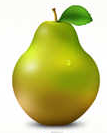
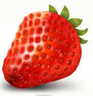

 
First image src using
:nth()
:
Last image src using
:last
:
Click to remove PEAR
Click to detach STRAWBERRY
Click to restore Strawberry after Apple
Click to replace apple with strawberry
Animate can be used to do lots of stuff